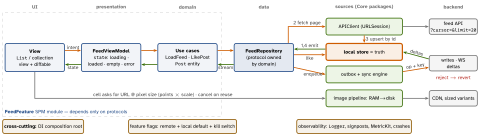

architecture · folio
In one line: Order of decisions: requirements (functional, non-functional, scale) → API + data model → client layers → data flow (read + write) → the hard parts (sync, pagination, images) → trade-offs. On the client the local store is the source of truth; the network syncs into it.
Download PDF Print view LaTeX source


The design, step by step
- 1 Requirements. Functional: scroll, infinite load, pull-to-refresh, like, detail. Out of scope: upload, stories, DMs. Non-functional: cached feed instantly on launch, no hitches (16.7/8.3 ms), flaky network/offline, memory-safe images. Ranking + fan-out live on the backend; the client consumes a ranked list.
- 2 API + model.
GET /feed?cursor=<opaque>&limit=20→{items, nextCursor}; items carry multi-resolution image URLs andviewerHasLiked. Normalize: entities byidin one store, the feed = ordered id list → one like updates every screen. - 3 Layers. View → ViewModel (UI state enum, no UIKit) → use cases → Repository (hides remote vs local) → data sources. Dependencies point inward; the domain owns the repository protocol (DIP) → fake repo in tests.
- 4 Data flow. Read: observe local store (1) → fetch page (2) → upsert + dedup (3) → store emits (4). Write: optimistic store write → outbox → server → ack or revert.
- Offline-first + sync. Push dirty ops, pull since cursor. Retries need idempotency (client UUID key; “set” not “increment”). Backoff + jitter; per-item success. Deletes = tombstones. Conflicts — name the policy: server-wins, LWW (loses edits; clock skew), version/ETag +
If-Match(412), field merge, CRDT. Triggers: foreground,NWPathMonitor,BGAppRefreshTask, silent push. - Pagination. Cursor/keyset: stable under inserts, opaque, resumable. Offset: new posts at the top shift pages → duplicates and gaps. Prefetch the next page N rows before the end.
- Images. Memory:
NSCacheof decoded, downsampled images (cost limit, purged under pressure). Disk: size-bounded LRU of bytes. Downsample with ImageIO to points × scale, off main; coalesce duplicate URL requests; cancel on reuse and check the cell still shows the same id; prefetch viaprefetchItemsAt. - Real-time. WebSocket deltas for visible posts in the foreground; APNs when backgrounded. Server count replaces, never adds to, the optimistic one.
- Platform. SPM feature + Core modules (build time, boundaries). Flags: cached remote config, safe default. Token in Keychain; 401 → refresh + replay.
Example — repository: read local, sync in
actor FeedRepository: FeedRepositoryProtocol { // init omitted
let api: APIClient; let store: PostStore; let outbox: Outbox
private var cursor: String? // opaque, server-made
func posts() -> AsyncStream<[Post]> { store.observeFeed() }
func loadNext() async throws {
let page = try await api.feed(after: cursor, limit: 20)
try await store.upsert(page.items) // dedup by id -> emits
cursor = page.nextCursor // nil = end of feed
}
func like(_ id: Post.ID) async {
await store.setLiked(id, true) // optimistic, instant
await outbox.enqueue(.like(id), key: UUID()) // retry-safe
} // server rejects -> store.setLiked(id, false)
}Trade-offs
| Choice | What decides it |
|---|---|
| SwiftData · GRDB · files | queries + migrations · SQL control · feed cache only |
SwiftUI List vs UIKit CV | velocity vs fine reuse / prefetch control |
| WebSocket · polling · APNs | live in foreground · fallback · app closed |
| Nuke / Kingfisher | use one — but justify each layer |
Traps
- Network as source of truth → blank screen offline and on every cold launch.
- Offset pagination on a live feed; loading only at the bottom.
- Retrying a POST with no idempotency key → double like.
- Caching only bytes (decode per display); full-res decode on main.
- “It just syncs” — name the conflict policy and how you detect a conflict (version, not clock).
try!decoding the page — one bad item kills the feed.
Remember
Requirements → API → layers → flow → hard parts → trade-offs. Local is truth · cursor · outbox + key · decoded RAM + disk LRU.